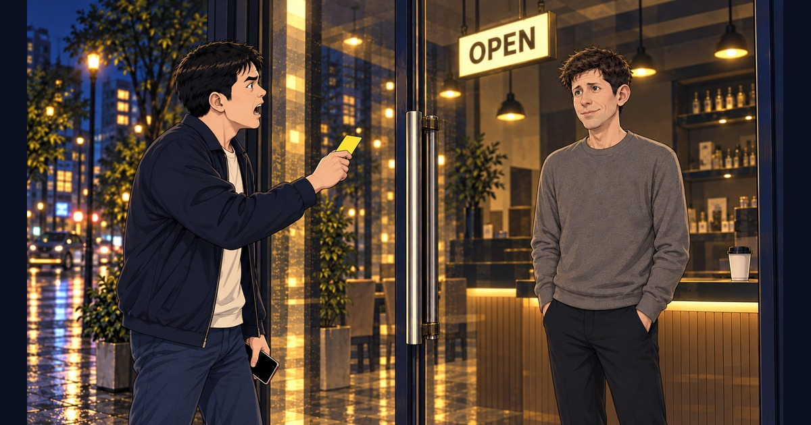

MUSIC · IMAGE CINEMA · WEBTOON
내 돈도 안 받냐
돈을 내겠다는 손님이 닫힌 문 앞에서 기다리는 황당함을 노래와 이미지 시네마·웹툰으로 풀어낸 풍자.
노래 원작 · 미리내맨

이름은 오픈인데
공짜를 달라는 것도 아닌 손님이 닫힌 문 앞에 섰습니다.황당해서 화를 내고 돌아서려다가 다시 화면을 눌러 봅니다.
“내 돈도 안 받냐”라는 질문은 어느새 기다리는 자신을 향합니다.
노래와 이미지 시네마는 같은 시간을 함께 흐릅니다.웹툰 8장은 읽는 사람의 속도로 이어집니다.
영상의 가사는 별도 자막으로 표시되며 감상자가 켜고 끌 수 있습니다.
작품에 대하여
가상의 OPEN 상점을 무대로 한 풍자입니다.샘 알트만의 등장은 창작적 각색이며 실제 발언을 재현하지 않습니다.